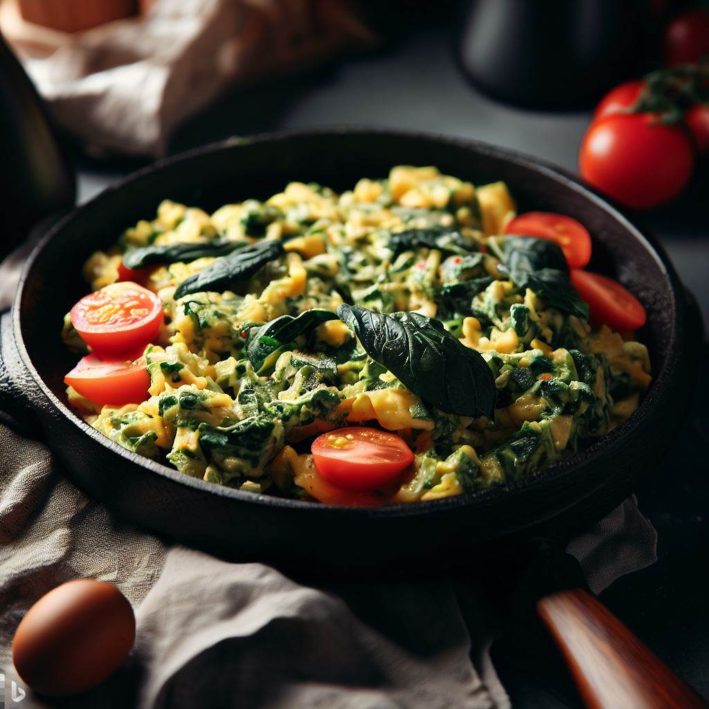

Scrambled eggs with spinach and tomatoes

| Ingredients |
Amount |
| Eggs |
2 |
| Fresh spinach |
1 handful |
| Cherry tomatoes |
1/2 cup, halved |
| Olive oil |
1 tablespoon |
| Salt and pepper |
To taste |
Directions:
- Heat olive oil in a non-stick pan over medium heat.
- Add the cherry tomatoes and sauté for 1-2 minutes until they start to soften.
- Add the spinach and continue to sauté until wilted.
- In a separate bowl, beat the eggs with salt and pepper.
- Pour the eggs into the pan and stir gently with a spatula until the eggs are scrambled and cooked through.
- Serve hot.